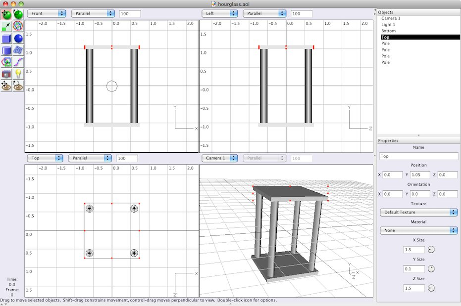
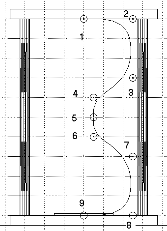
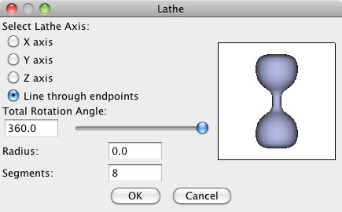
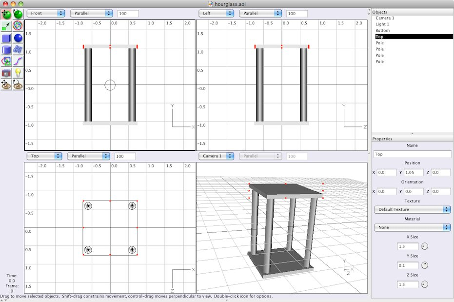
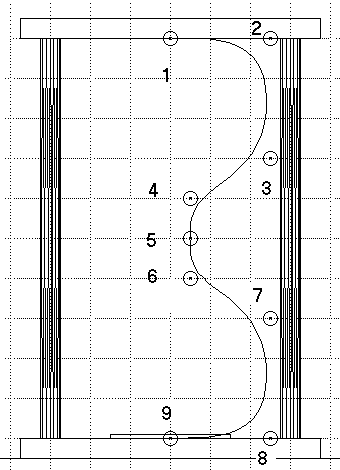
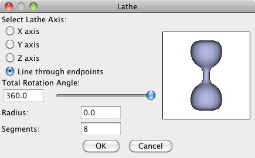

| move object | |
|
rotate object |
| resize object | |
|
move/resize/rotate object |
| create box | |
|
create sphere |
| create cylinder | |
|
create spline mesh |
| create polygon | |
|
create curve |
| create camera | |
|
create light source |
| move view | |
|
rotate view |
'create box' tool 'resize object' tool 'move object' tool  'create cylinder' tool to create a cylinder of the following proportions:
'move viewpoint' tool and the 'rotate viewpoint' tool to change the lower-right view (camera1). Now you can see the model from any angle you like. The result should look something like this:

create curve tool. To avoid painfully precise mouse work, first create a finer Grid: spacing 0.2 with 2 subdivisions. Then select Scene->One View from the menu. You can then set the zoom factor of the view to 200 percent. Now create the spline curve by adding the points 1 though 9 shown in the image below (in that order). Double-click point 9 to finish the spline curve. Make sure that the first and the last point are nicely on the y axis and tangent to the the top and bottom boxes we made earlier.

This is an approximated curve, meaning the curve does not pass exactly through all the points. You can also create interpolated curves, where the curve does pass through all the points. Double-click the create curve icon to pick which kind of curve to create. The approximated curve is less intuitive, but produces a smoother shape than the interpolated curve does. The direction of the curve at the beginning and end of the curve is determined by the only adjacent point. The curve is vertical at point 5 because points 4 and 6 are both vertically displaced from this point. In general, the curve at any point is determined by the immediately preceding and following definition points.
As the central axis of the glass bulb, we will use the line running though the endpoints of the curve. In our drawing, this is the y axis, but by using the first line results in a solid object. To create the lathe, first select the curve and then select Tools->Lathe from the menu. In the lathe dialog, select the Line though endpoints as the lathe axis (see figure below).

The lathe shape is automatically centered at (0, 0, 0). This is exactly where we want it, so leave it. (Of course this is no coincidence. I planned it that way!). The spline curve that we created first is now redundant. You may delete it, but you don't have to since it won't show up in the final rendering. To delete an object, select it (from screen or from list of objects) and press delete on the keyboard. You may also use the menu option Edit->Clear.
move view tool and the rotate view tool. Hold Control while moving the view to zoom in and out. And you may roll the view over by holding Control and using the rotate view tool. You may also position the camera using the move object tool and the rotate object tool or with the Properties panel. The camera is an object just like any other. A good position might be one where you can see the top and two other sides of the object.
Next we should illuminate the scene. As you can see there is already a light source in the scene from the beginning of the session, Light 1. The light source should be positioned so that it illuminates the side of the object we are looking at. Light 1 is probably not positioned correctly given the position of the camera. Since this light source is also far away, we'll delete it and create a new one. AoI supports three types of light sources: point lights, directional lights and spot lights. We'll use the simplest of them, the point light. Follow the next steps to correctly illuminate the scene:
create light source icon and click over the position where you want the light. You should probably move the light (just like moving other objects) in one of the other views to get the correct position in 3D space.
'create cylinder' tool to create a cylinder of the following proportions:
'move viewpoint' tool and the 'rotate viewpoint' tool to change the lower-right view (camera1). Now you can see the model from any angle you like. The result should look something like this:

create curve tool. To avoid painfully precise mouse work, first create a finer Grid: spacing 0.2 with 2 subdivisions. Then select Scene->One View from the menu. You can then set the zoom factor of the view to 200 percent. Now create the spline curve by adding the points 1 though 9 shown in the image below (in that order). Double-click point 9 to finish the spline curve. Make sure that the first and the last point are nicely on the y axis and tangent to the the top and bottom boxes we made earlier.

This is an approximated curve, meaning the curve does not pass exactly through all the points. You can also create interpolated curves, where the curve does pass through all the points. Double-click the create curve icon to pick which kind of curve to create. The approximated curve is less intuitive, but produces a smoother shape than the interpolated curve does. The direction of the curve at the beginning and end of the curve is determined by the only adjacent point. The curve is vertical at point 5 because points 4 and 6 are both vertically displaced from this point. In general, the curve at any point is determined by the immediately preceding and following definition points.
As the central axis of the glass bulb, we will use the line running though the endpoints of the curve. In our drawing, this is the y axis, but by using the first line results in a solid object. To create the lathe, first select the curve and then select Tools->Lathe from the menu. In the lathe dialog, select the Line though endpoints as the lathe axis (see figure below).

The lathe shape is automatically centered at (0, 0, 0). This is exactly where we want it, so leave it. (Of course this is no coincidence. I planned it that way!). The spline curve that we created first is now redundant. You may delete it, but you don't have to since it won't show up in the final rendering. To delete an object, select it (from screen or from list of objects) and press delete on the keyboard. You may also use the menu option Edit->Clear.
move view tool and the rotate view tool. Hold Control while moving the view to zoom in and out. And you may roll the view over by holding Control and using the rotate view tool. You may also position the camera using the move object tool and the rotate object tool or with the Properties panel. The camera is an object just like any other. A good position might be one where you can see the top and two other sides of the object.
Next we should illuminate the scene. As you can see there is already a light source in the scene from the beginning of the session, Light 1. The light source should be positioned so that it illuminates the side of the object we are looking at. Light 1 is probably not positioned correctly given the position of the camera. Since this light source is also far away, we'll delete it and create a new one. AoI supports three types of light sources: point lights, directional lights and spot lights. We'll use the simplest of them, the point light. Follow the next steps to correctly illuminate the scene:
create light source icon and click over the position where you want the light. You should probably move the light (just like moving other objects) in one of the other views to get the correct position in 3D space.